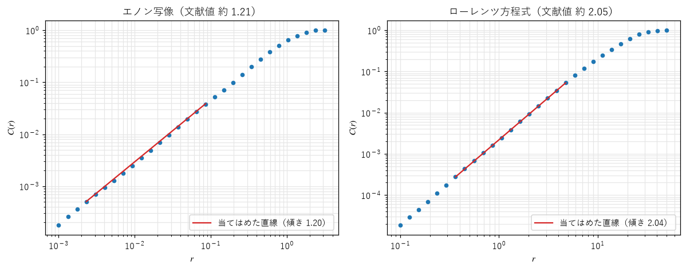
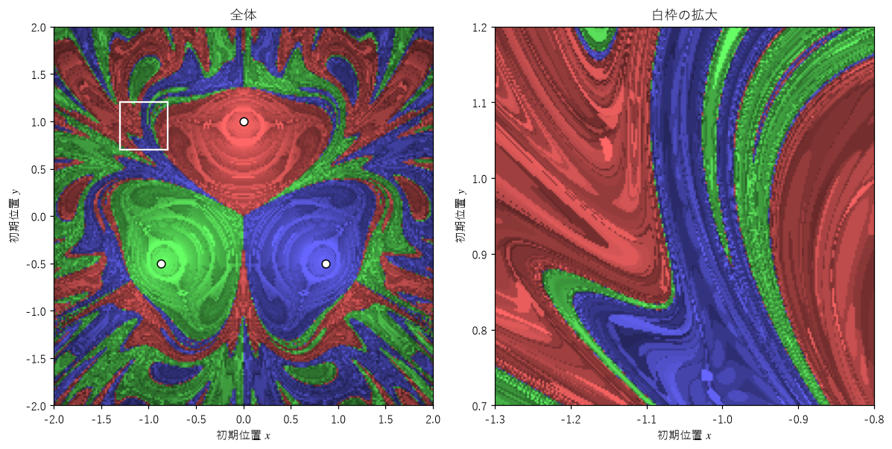

第 10 章 カオスとフラクタルの接点
ここまで、カオスとフラクタルを別々の部で扱ってきたが、両者は何度も同じ場所に現れた。ロジスティック写像の分岐図は自己相似な構造を持ち、エノン・アトラクタは拡大するたびに層が現れ、ジュリア集合の上では軌道がカオス的に振る舞った。この章では、両者がなぜ結び付くのかを整理し、ストレンジアトラクタのフラクタル次元を測る方法と、吸引領域の境界に現れるフラクタルを扱う。
ストレンジアトラクタはなぜフラクタルになるか
第 4 章で見たように、カオスは引き伸ばしと折り畳みの繰り返しから生まれる。散逸系では、これに「体積の縮小」が加わる。エノン写像を例にとると、1 回の反復で、領域は
ある方向に引き伸ばされ（近くの点どうしが離れる）、
折り曲げられて元の領域に戻され、
全体として面積が 0.3 倍に縮む。
引き伸ばされた方向と直交する方向には、領域は押しつぶされる。1 本の帯は、反復すると折り曲げられた 2 本の帯になり、さらに反復すると 4 本になる。これを無限に繰り返すと、引き伸ばされた方向には滑らかな曲線、押しつぶされた方向にはカントール集合のような点の並びを持つ構造ができる。これがストレンジアトラクタのフラクタル構造の正体である。
この見方から、アトラクタの次元についての目安も得られる。引き伸ばしの強さ（正のリアプノフ指数）と縮みの強さ（負のリアプノフ指数）の釣り合いで、アトラクタがどれだけ空間を埋めるかが決まる。2 次元の写像で、リアプノフ指数が \(\lambda_1 > 0 > \lambda_2\) のとき、
をリアプノフ次元（カプラン＝ヨーク次元）という。多くのアトラクタで、この値はフラクタル次元と一致すると予想されており（カプラン＝ヨーク予想）、多くの例で数値的に確かめられている。エノン写像では \(\lambda_1 \approx 0.42\)、\(\lambda_2 \approx -1.62\) で、\(D_{\mathrm{KY}} \approx 1.26\) となる。
相関次元
第 7 章のボックスカウント次元は、ストレンジアトラクタにも使える。しかし、アトラクタ上には点が非常に濃い部分とまばらな部分があり、まばらな部分のボックスまで正しく数えるには、膨大な数の点が必要になる。また、3 次元以上ではボックスの数が多くなりすぎる。そこで、ストレンジアトラクタの次元の推定には、1983 年にグラスバーガーとプロカッチャが提案した相関次元（correlation dimension）がよく使われる。
アトラクタ上の \(N\) 個の点 \(\boldsymbol{x}_1, \ldots, \boldsymbol{x}_N\) について、距離が \(r\) より小さい点の組の割合
を相関積分（correlation integral）という（\(\#\) は個数を表す）。点が \(D\) 次元的に分布していれば、ある点から半径 \(r\) 以内にある点の数は \(r^D\) に比例するので、\(C(r) \propto r^{\nu}\) となる。この指数 \(\nu\) を相関次元という。相関次元は、ボックスカウント次元以下の値になるが、多くのアトラクタでは両者はほぼ等しい。
相関積分は、点の組の距離をすべて計算し、並べ替えてから、各 \(r\) より小さいものを数えれば求められる。4000 点なら組の数は約 800 万で、NumPy で一度に計算するとメモリを多く使うので、500 点ずつに分けて計算する。
24def correlation_integral(points: Array, radii: Array, chunk: int = 500) -> Array:
25 """各半径 r について、距離が r 未満の点の組の割合 C(r) を返す.
26
27 すべての組の距離を一度に計算するとメモリーを多く使うので、chunk 個ずつに分けて計算する。
28 """
29 n = len(points)
30 counts = np.zeros(len(radii))
31 for start in range(0, n, chunk):
32 block = points[start:start + chunk]
33 d = np.sqrt(((block[:, None, :] - points[None, :, :]) ** 2).sum(axis=-1))
34 # 自分自身との組（距離 0）と、同じ組を 2 回数えるのを避けるため、番号が大きい相手だけを数える
35 idx = np.arange(start, start + len(block))
36 mask = idx[:, None] < np.arange(n)[None, :]
37 dist = np.sort(d[mask])
38 counts += np.searchsorted(dist, radii)
39 result: Array = counts / (n * (n - 1) / 2)
40 return result
図 47 は、エノン・アトラクタとローレンツ・アトラクタの相関積分を両対数グラフに描いたものである。


図 47 相関積分の両対数グラフ。赤い直線は、当てはめに使った範囲。
\(r\) が小さい範囲では、点がほぼ一直線に並ぶ。\(r\) がアトラクタの大きさに近づくと、ほとんどすべての組が数えられて \(C(r)\) は 1 で頭打ちになる。逆に \(r\) が小さすぎると、組の数が少なくなって統計的なばらつきが大きくなる。直線を当てはめるのは、その間の範囲である。推定結果を次に示す。
エノン写像: 相関次元の推定値 1.200（文献値 約 1.21）
ローレンツ方程式: 相関次元の推定値 2.043（文献値 約 2.05）
エノン写像: ボックスカウント次元の推定値 1.259（文献値 約 1.26）
エノン・アトラクタの次元は約 1.2 で、曲線（1 次元）より少しだけ平面を埋める。ローレンツ・アトラクタの次元は約 2.05 で、面（2 次元）に見えるアトラクタが、実はわずかに厚みのある、層の重なりであることを示している。最後の行は、同じエノン・アトラクタのボックスカウント次元である。相関次元とボックスカウント次元はほぼ等しく、リアプノフ次元の約 1.26 とも近い。
時系列からのアトラクタの再構成
実験や観測では、状態のすべての変数を測れるとは限らない。たとえば、ローレンツ方程式の \(x\) だけが時系列として得られる場合でも、時間をずらした値を並べたベクトル \((x(t), x(t + \tau), x(t + 2\tau))\) を作ると、元のアトラクタと（滑らかな変形を除いて）同じ構造を持つ図形が得られる。これを遅れ座標による埋め込み（delay embedding）といい、ターケンスの埋め込み定理（1981 年）がその正しさを保証する。再構成したアトラクタの相関次元を計算すれば、観測データの背後にある力学系の次元を推定できる。この方法は、心拍や脳波、気象データなどの解析に使われてきた。
吸引領域の境界
アトラクタが複数ある系では、状態空間は「どのアトラクタに行き着くか」によって分割される。各アトラクタに行き着く初期値全体の集合を、そのアトラクタの吸引領域（basin of attraction）、あるいはベイスンという。第 9 章のニュートン法フラクタルは、3 つの解（3 つの固定点のアトラクタ）の吸引領域を色分けした図だった。
吸引領域の境界は、滑らかな曲線になることもあるが、フラクタルになることもある。その例として、磁気振り子を取り上げる。振り子のおもりが鉄でできていて、その下に 3 つの磁石が置かれているとする。おもりを手で持ち上げて放すと、磁石に引かれながら複雑に動き回り、摩擦によって最後はどれか 1 つの磁石の上で止まる。
ここでは、おもりの水平面内の位置 \(\boldsymbol{x} = (x, y)\) が、次の運動方程式に従うとする。
右辺の第 1 項は振り子を中心に戻そうとする力、第 2 項は摩擦力、第 3 項は位置 \(\boldsymbol{m}_i\) にある 3 つの磁石からの引力で、\(h\) は磁石がおもりの動く面からどれだけ下にあるかを表す。サンプルでは \(k = 0.5\)、\(\gamma = 0.2\)、\(h = 0.3\) とし、磁石を原点を中心とする半径 1 の円の上に等間隔に置く。
32def pendulum(state: Vector) -> Vector:
33 """状態 (x, y, vx, vy) の時間微分を返す."""
34 x, y, vx, vy = state[..., 0], state[..., 1], state[..., 2], state[..., 3]
35 ax = -K * x - GAMMA * vx
36 ay = -K * y - GAMMA * vy
37 for mx, my in MAGNETS:
38 dx, dy = mx - x, my - y
39 r2 = dx * dx + dy * dy + H * H
40 inv_r3 = 1.0 / (r2 * np.sqrt(r2)) # 1 / r^3（** 1.5 より速い）
41 ax = ax + dx * inv_r3
42 ay = ay + dy * inv_r3
43 return np.stack([vx, vy, ax, ay], axis=-1)
初期位置を格子状に 4 万個並べ（初速度は 0）、どの磁石の上で止まるかを計算する。すべての初期値を NumPy の配列でまとめて RK4 で計算し、止まった点は計算の対象から外して速くする。


図 48 磁気振り子の吸引領域。色は止まった磁石（白丸）、明るさは止まるまでの時間（暗いほど長い）を表す。
図 48 で、磁石の近くから放すと、おもりはその磁石で止まる。しかし、磁石から離れた場所では、3 色の領域が細い帯となって複雑に入り組んでいる。右の拡大図でも、帯の中にさらに細い帯が現れる。境界の近くでは、初期位置をほんのわずか変えるだけで、止まる磁石が変わる。
この系の運動は、最終的には必ず止まるので、アトラクタは 3 つの固定点だけである。それでも、止まるまでの過渡状態の間、おもりは磁石の間をカオス的に動き回る。このような、有限の時間だけ続くカオスを過渡カオス（transient chaos）という。過渡カオスがあると、吸引領域の境界はフラクタルになり、最終的な結果（どの磁石で止まるか）を予測するには、初期値を非常に高い精度で知る必要がある。初期値の不確かさを \(\varepsilon\) とすると、結果を正しく予測できない初期値の割合は \(\varepsilon^{\alpha}\) に比例して減り、境界がフラクタルなほど指数 \(\alpha\) は小さくなる。つまり、精度を上げても、予測できない初期値の割合はなかなか減らない。サイコロやコイン投げの結果が予測できないのも、同じような仕組みによると考えられている。
カオスとフラクタルの関係のまとめ
本書で扱った、力学系に現れるフラクタルを、次の表にまとめる。
フラクタル |
現れる場所 |
生まれる仕組み |
|---|---|---|
ストレンジアトラクタ |
カオス的な散逸系の長期的な軌道（第 6 章） |
引き伸ばし、折り畳み、体積の縮小の繰り返し |
ジュリア集合 |
複素数の写像で、発散する初期値と発散しない初期値の境界（第 9 章） |
境界上のカオス的な（反発的な）振る舞い |
フラクタルな吸引領域の境界 |
複数のアトラクタを持つ系（第 9 章、本章） |
境界の近くでの過渡カオス |
分岐図、マンデルブロ集合 |
パラメータ空間（第 4 章、第 9 章） |
同じ分岐の仕組みが、小さなスケールで繰り返し現れること |
IFS のアトラクタ |
縮小写像の組（第 8 章） |
縮小した複製の貼り合わせ |
いずれの場合も、フラクタルは単純な規則を無限に繰り返した結果として現れる。カオスは「時間の中で繰り返される引き伸ばしと折り畳み」、フラクタルは「空間に刻まれたその痕跡」と見ることができる。
まとめ
ストレンジアトラクタは、引き伸ばされた方向には滑らかで、押しつぶされた方向にはカントール集合のような構造を持つ。リアプノフ指数からも次元を見積もれる。
相関次元は、点の組の距離の分布から推定する次元で、ストレンジアトラクタの次元の推定によく使われる。
時系列 1 つからでも、遅れ座標による埋め込みでアトラクタを再構成できる。
過渡カオスがあると、吸引領域の境界はフラクタルになり、最終状態の予測が難しくなる。